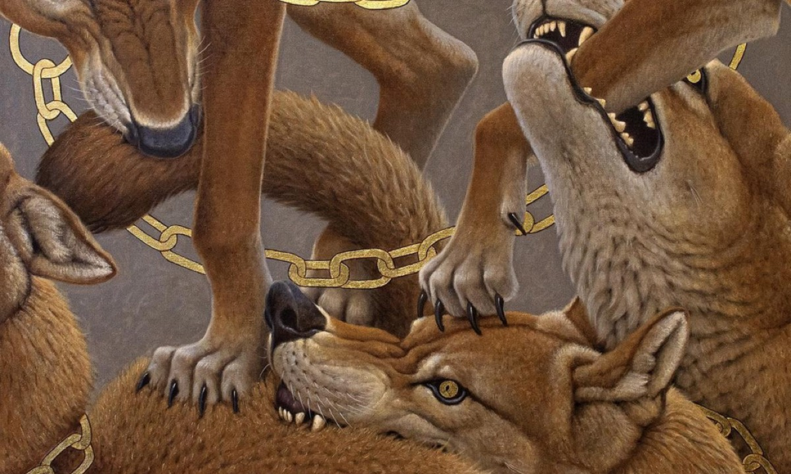

Güncel Rus Edebiyatının Ekim Nöbeti
Bolşevik Devrimi’nin onuncu yıldönümüne denk gelen 1927 yılında, Granat Kardeşler Ansiklopedisi’nin 41. cildi için kendi yaşamöyküsünü kaleme alan Nikolay Buharin, çocukluğuna dair tuhaf bir kriz anını kayda geçirmişti.…

Bolşevik Devrimi’nin onuncu yıldönümüne denk gelen 1927 yılında, Granat Kardeşler Ansiklopedisi’nin 41. cildi için kendi yaşamöyküsünü kaleme alan Nikolay Buharin, çocukluğuna dair tuhaf bir kriz anını kayda geçirmişti. On iki yaşındayken Vladimir Solovyov’un Üç Konuşma’sını ve İncil’deki Vahiy Kitabı’nı peş peşe okuyan genç Nikolay, birdenbire Deccal olabileceğinden kuşkulanmış; kutsal ekmeği kiliseden gizlice kaçırıp masanın üzerine tükürdükten sonra, son derece dindar ve erdemli olan öz annesini köşeye sıkıştırarak sorguya çekmişti: “Anne, doğruyu söyle, sen bir fahişe misin? Çünkü benim Deccal olmam için senin fahişe olman gerekiyor.”
Novoye Literaturnoye Obozreniye’de (NLO) yazan Alexander Etkind’in aktarımı bu yönde. Buharin gibi iktidarın zirvesinde, Politbüro üyesi ve Pravda’nın başındaki bir adamın devrimin kurucu hafıza külliyatına bu denli cüretkâr, neredeyse saygısız bir oto-ironiyi kendi eliyle teslim etmiş olması ilk bakışta bir münasebetsizlik gibi görünebilir. Oysa Granat Kardeşler Ansiklopedisi’nin imzasız önsözünde -ki sosyolog Mihail Reysner’in kaleminden çıktığı kuvvetle muhtemeldir- tarihin nesnel değerinin ancak “faillerin kendi öznel anlatılarıyla” inşa edilebileceği açıkça ilan ediliyordu. Eski dünyadan kopuş, geçmişi inkâr ederek değil; o geçmişin dinsel tortularını, aşırılıklarını ve sınıfsal çatlaklarını alabildiğine egzotikleştiren, bugünün dünyası ile dünün dünyası arasındaki mesafeyi azami ölçüde geren bir “öznel tarih” vasıtasıyla mümkündü. Yeni insan, geçmişi pürüzsüz bir hagiografiyle değil, kendi geçmişini bir başkası, bir yabancı kılarak kuruyordu.
Aradan geçen yüz yılın ardından, bugünün Rus edebiyatına ve düşünce dünyasına baktığımızda karşılaştığımız manzara ise bu kurucu radikalizmin tam tersi bir felce işaret ediyor. Edebiyat tarihçisi Marietta Çudakova, 1990’larda yayımlanan Sovyet dönemi anı ve edebiyat yığınının, mahkeme salonlarında kurulamayan Rus Nürnberg Mahkemesi’nin kitap sayfaları üzerindeki ikamesi olduğunu iddia etmişti. Fakat bu iddia, edebiyatın ve kolektif hafızanın devrimle kurduğu ilişkiyi aydınlatmaktan ziyade kararttı. Batı’nın Holokost tecrübesinden devşirdiği “travma”, “tanıklık” veya “geçmişle hesaplaşma” kavramlarını Rus zihnine toptancı bir şablon gibi giydirmek ciddi bir metodolojik yanılgıdır. Nitekim Petersburg Memorial Derneği’nin eski başkanı Venyamin İofe’nin bir keresinde acı bir ironiyle fısıldadığı o cümle, meselenin hukukî bir hesaplaşma değil, ontolojik bir yarılma olduğunu çok daha iyi özetliyordu: “Bizim seçmenimiz orada, mezarlıklarda yatıyor.”
Mezarlık bekçileri
Devrim hafızasının soğuma ve ısınma evreleri vardır. Edmund Burke, Fransız Devrimi’ni yerden yere vurduğu metinlerinde, tehlike ve dehşetin ancak belirli bir mesafeden seyredildiğinde estetik bir hazza, bir tür “büyüleyici dehşete” dönüştüğünü yazıyordu. Burke’e göre toplum sözleşmesi yalnızca yaşayanlar arasında değil; yaşayanlar, ölmüş olanlar ve henüz doğacak olanlar arasında kurulan ebedi bir bağdı.
Rusya’da 1990’lardan bu yana tanık olduğumuz şey tam da bu gizli anlaşmanın tahrif edilmesidir. Sovyetler Birliği’nin tasfiyesinin ardından piyasaya sürülen edebiyat, Ekim Devrimi’ni tarihsel ve sınıfsal bir moment olarak kavramak yerine en kötü yolu tercih etti. Mantık son derece ilkeldi: Eğer Lidiya Ginzburg’un 1960’larda yazdığı gibi “tarih, ruhları dönüştüren” bir güçse ve bugünün aydını kendi post-Sovyet ruhundan nefret ediyorsa,yapılacak tek şey kalıyordu; o tarihi zihinsel bir işlemle “iptal” etmek, geçmişi alternatif bir fanteziyle silmek.
Viktor Pelevin’in Çapayev ve Boşluk romanı bu tasfiye hareketinin en kusursuz örneğiydi. Pelevin, İç Savaş’ın kanını, barutunu ve sınıfsal öfkesini ne ideolojik bir zeminde tartıştı ne de tarihsel bir trajedi olarak ele aldı; devrimi doğrudan doğruya bir Budist serabın, “İç Moğolistan” adını verdiği metafizik bir hiçliğin içine buharlaştırdı. Bolşevik komutan Çapayev piyano başında Mozart fa minör füg çalarken, devrimin hakikati “kil makineli tüfek” ile ontolojik bir sıfırlamaya kurban ediliyordu. Vladimir Sorokin’in Mavi Yağ’ında ise benzer bir tasfiye, bu kez Andrey Platonov’un et ile makine arasındaki gerilimini parodileştirerek yapıldı. Sorokin’in kurguladığı devrim treninin kazanları kömürle değil; kurutulmuş düşman cesetlerinin, beyaz muhafızların kemiklerinden sıyrılmış etleriyle besleniyordu.
Postmodern karnavalın 1990’lardaki bu hafifliği, 2000’li yıllarda yerini eğitimli sınıfların ahlakçı didaktizmine bıraktı. Dmitriy Bıkov’un İmla (Orfografiya) ve ardından gelen Ostromov romanları ile Boris Akunin’in Aristonomiya’sı devrimi doğrudan doğruya bir “ayak takımı istilası” parantezine aldı. Bıkov’un romanlarında 1917, aydınların oluşturduğu narin ve rafine kültür dünyasının, karanlık denizciler ve histerik ajitatörler tarafından linç edilmesinden ibaretti. Akunin ise roman kahramanı Anton Klobukov’un serüvenleri üzerinden, devrimi toplumu geriye fırlatan devasa bir entropi dalgası olarak kodluyor, nihayetinde kahramanını toplumsal bir uzlet köşesine çekilmeye zorluyordu.
Bu edebiyatın temel zaafı şudur: Yazarlar, tarihin faillerine bugün vardıkları nihaî durağın -Gulag’ın, 1937 tasfiyelerinin, 1970’lerin durgunluğunun- konforlu ahlakî üstünlüğüyle ders vermeye kalkışıyorlar. Oysa Ekim 1917’ye giren hiç kimse o nihaî istasyonu bilmiyordu; onları harekete geçiren şey, zamanın ve mekânın dışına taşan muazzam bir gelecek iradesiydi. Günümüz Rus edebiyatının büyük kısmı, devrimin büyüleyici dehşetini anlamaktan aciz olduğu için,onu ya bir ucuz kan banyosuna ya da kötü niyetli bir kazaya indirgemeyi seçiyor.